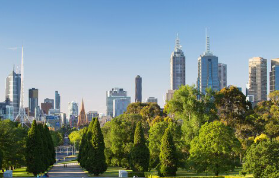
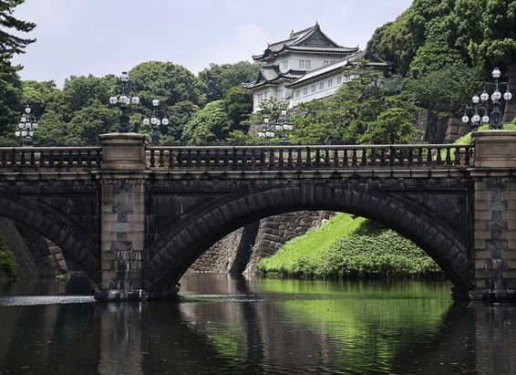

NATIONAL GEOGRAPHIC

How to plan the ultimate campervanning adventure through Australia
TRAVEL
- 
As road trip destinations go, there are few better places than Australia. Nature seems to flow in through the windows in eucalyptus-scented gusts as you drive, while the wonders of the great red continent unfurl beyond the windscreen.
Koalas munch on gum leaves in the tall trees, while kangaroos bound carefree along the roadside. Come the evening, chirruping cicadas and croaking frogs surround you. In the morning, the birds seem to serenade the returning sun, with the fluting notes of magpies and the mischievous cackles of kookaburras.
A campervan gives you the freedom to change your route and stop whenever and wherever you wish at every farmers’ market, cellar door, viewpoint and watering hole. Along the country’s southern coast, you can trace the curves of sheer cliffs beside sapphire waters, explore dynamic cities and learn about First Australian cultures that stretch back over 50,000 years. To the west, one of the world’s remotest cities is the first step to tasting fine local dishes and world-leading wines, and to meeting one of the continent’s most charismatic ambassadors: the smiley marsupial known as the quokka.
When it’s time to settle down for the night, there are abundant campsites, holiday parks and national parks. Immerse yourself fully in some of the country’s most beautiful landscapes while you rest. Choose to rise early, and your footprints can be the day’s first on white sand beaches. But in a campervan, there’s no schedule to keep, and you can sleep in if you wish. Ahead lies the prospect of new adventures and the freedom of the open road.
Itinerary 1: Melbourne to Adelaide
Some of Australia’s most extraordinary scenery lies along its southeast coast, from vertiginous sea cliffs to golden beaches.
The best place to start is Melbourne, where avant-garde art and eye-popping architecture meet a devoted coffee culture. Then head around 80 minutes west to Torquay, gateway to fabled scenic route the Great Ocean Road.This remarkable feat of engineering stretches 150 miles west along Victoria’s coastal fringes, as far as the town of Allansford. White-knuckled, it clings to limestone cliffs ribboned with foamy surf.
1. Melbourne
The Manhattan-like skyline is deceptive: beneath are Victorian train stations. This is Australia’s cultural heart, with Federation Square and adjacent lanes acting as galleries for street art. Elsewhere, you’ll discover modern masterpieces in the National Gallery and First Nations sculptures along the Yarra River.
2. Torquay
It may seem like any other beach town, with laid-back brunch spots and a barefoot culture, but Torquay is a Goliath in the surfing world. It draws devotees in search of the perfect wave and, if you’re a beginner, it’s an ideal place to clamber onto a board.
3. Lorne
Arrive hungry in Lorne, a beachside hamlet known for creative local dishes. Don’t miss the Cantonese-inspired Australian dumplings known as ‘dim sims’, stuffed with pork and cabbage at Little Picket. You can play lawn bowls while you wait.
4. Great Otway National Park
The Great Ocean Road is at its wildest as it winds through this national park, full of rugged beach cliffs, undulating mountains and rainforests with ferns the size of houses. Park up to wander forest trails under a canopy of eucalyptuses, discover the waterfalls, and stay till dusk to spot elusive platypuses.
5. The Twelve Apostles
These karst stacks, sculpted by thrashing seas, were named the Twelve Apostles in the 1920s to provoke a sense of biblical wonder, yet only eight formations rise from the surf. Time your stop for sunset, when the light takes on a soft pink glow.
Comments :
- john Very good
- john Very good
Leave a Reply
Your email address will not be published. Required fields are marked*
Related posts:
-
 Where to travel in December
Where to travel in DecemberThe month is also ideal for polar play with the midnight sun illuminating days for wildlife spotting in Antarctica, while the Northern Lights dance across clear skies around the Arctic Circle and fresh powder heralds the opening of the slopes in ski resorts across North America and Europe.
View article -
Everything to Know About Tokyo
Tokyo can feel energetic one moment and calm the next, green then gray, forward thinking then stubbornly old-fashioned. Harajuku is youthful. Neighboring Omotesando is chic. The Izu Islands are sedate. Like a Noh actor, the city wears many masks, each bringing a new dynamic to the stage.
View article -
 Discover the Best of Tokyo
Discover the Best of TokyoThe Izu Islands chain, south of mainland Tokyo, is a mellow change of pace to the city. Besides the possibility of spotting dolphins, humpback whales, and sperm whales here, islands like Miyake-jima and Hachijo-jima teem with birdlife.
View article